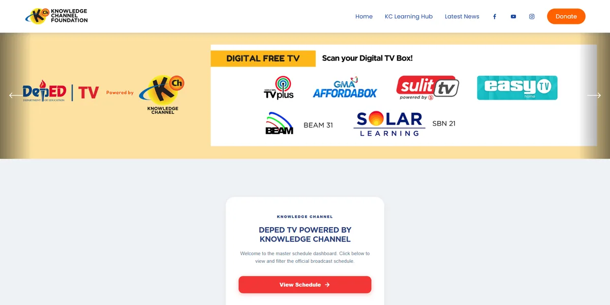

01 / LIVE DATA INTEGRATION
DepEd TV Schedule
Built an AI-assisted custom frontend connected to Google Sheets and Google Apps Script for weekly TV schedule updates.
JavaScriptGoogle SheetsApps Script
Explore live project